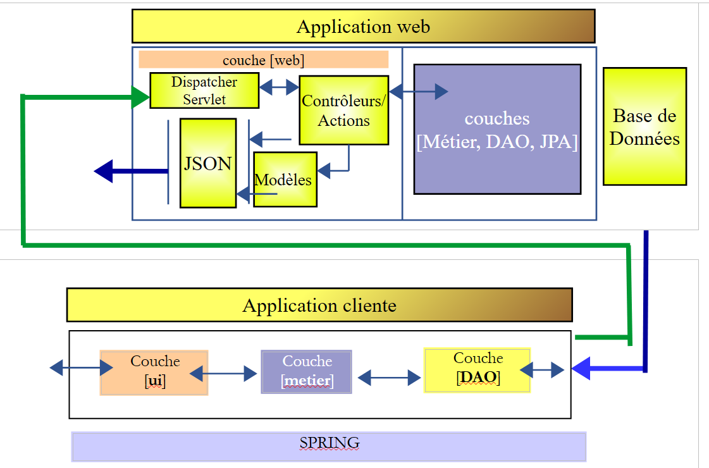
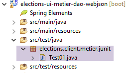
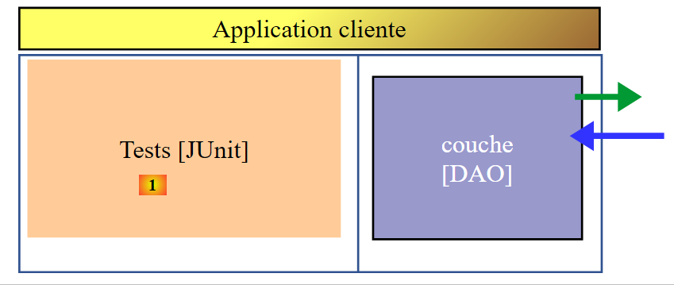
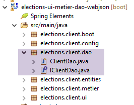
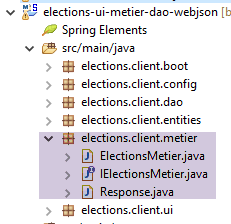

15. [TD]: Creación de un cliente para el servicio web
Palabras clave: arquitectura multicapa, Spring, inyección de dependencias, servicio web / JSON, cliente / servidor
15.1. Soporte
 |
Los proyectos de este capítulo se encuentran en la carpeta [support / chap-15].
15.2. La arquitectura cliente/servidor
Queremos crear la siguiente arquitectura cliente/servidor:
 |
La capa [ui] será la que ya se ha desarrollado en las secciones 9 y 10. Esto será posible porque la capa [business] superior implementará la misma interfaz [IElectionsMetier] que la capa [business] de la sección 8:
package elections.client.metier;
import elections.client.entities.ListeElectorale;
public interface IElectionsMetier {
// get the lists in competition
public ListeElectorale[] getListesElectorales();
// the number of seats to be filled
public int getNbSiegesAPourvoir();
// the electoral threshold
public double getSeuilElectoral();
// recording results
public void recordResultats(ListeElectorale[] listesElectorales);
// calculating seats
public ListeElectorale[] calculerSieges(ListeElectorale[] listesElectorales);
}
En la sección 7, la capa [DAO] intercambiaba datos con un SGBD. Aquí, la capa [DAO] intercambia datos con un servidor web / JSON.
Inicialmente, nos centraremos en la siguiente arquitectura:
 |
15.3. El proyecto Eclipse
El proyecto Eclipse es el siguiente:
 |  |  |
Esta estructura es idéntica a la del proyecto de ejemplo de la sección 13.6.1. Seguiremos el mismo enfoque.
15.4. Configuración de Maven
Es la que se describe en la sección 13.6.2.
15.5. Implementación de la capa [DAO]
 |
|
- El paquete [elections.client.config] contiene la configuración de Spring para la capa [DAO];
- El paquete [elections.client.dao] contiene la implementación de la capa [DAO];
- el paquete [elections.client.entities] contiene los objetos intercambiados con el servicio web / JSON;
- El paquete [elections.client.business] contiene la capa [business]
- El paquete [elections.client.ui] contiene la capa [UI]
15.5.1. Configuración de la capa [business]
 |
La clase [MetierConfig] se encarga de la configuración de Spring de la capa [business]. Su código es el siguiente:
package elections.client.config;
import org.springframework.beans.factory.config.ConfigurableBeanFactory;
import org.springframework.context.annotation.Bean;
import org.springframework.context.annotation.ComponentScan;
import org.springframework.context.annotation.Scope;
import org.springframework.http.client.HttpComponentsClientHttpRequestFactory;
import org.springframework.web.client.RestTemplate;
import com.fasterxml.jackson.databind.ObjectMapper;
@ComponentScan({ "elections.client.dao","elections.client.metier" })
public class MetierConfig {
// constants
static private final int TIMEOUT = 1000;
static private final String URL_WEBJSON = "http://localhost:8080";
@Bean
public RestTemplate restTemplate(int timeout) {
// creation of the RestTemplate component
HttpComponentsClientHttpRequestFactory factory = new HttpComponentsClientHttpRequestFactory();
RestTemplate restTemplate = new RestTemplate(factory);
// exchange timeout
factory.setConnectTimeout(timeout);
factory.setReadTimeout(timeout);
// result
return restTemplate;
}
@Bean
public int timeout() {
return TIMEOUT;
}
@Bean
public String urlWebJson() {
return URL_WEBJSON;
}
// mapper jSON
@Bean
@Scope(value = ConfigurableBeanFactory.SCOPE_PROTOTYPE)
public ObjectMapper jsonMapper() {
return new ObjectMapper();
}
}
Este código se explicó en la sección 13.6.3.1. Es más sencillo porque aquí no hay que gestionar filtros JSON.
15.5.2. Las entidades
 |
Las entidades gestionadas por las capas [DAO] y [business] son las que intercambian con el servicio web / JSON. Se trata de objetos de tipo [ElectionsConfig] y [VoterList]. En el lado del servidor, estas entidades tenían anotaciones de persistencia JPA. Aquí, esas anotaciones se han eliminado. Volvemos a incluir el código de la entidad a modo de referencia:
[Entidad abstracta]
package spring.webjson.client.entities;
public abstract class AbstractEntity {
// properties
protected Long id;
protected Long version;
// manufacturers
public AbstractEntity() {
}
public AbstractEntity(Long id, Long version) {
this.id = id;
this.version = version;
}
// redefine [equals] and [hashcode]
@Override
public int hashCode() {
return (id != null ? id.hashCode() : 0);
}
@Override
public boolean equals(Object entity) {
if (!(entity instanceof AbstractEntity)) {
return false;
}
String class1 = this.getClass().getName();
String class2 = entity.getClass().getName();
if (!class2.equals(class1)) {
return false;
}
AbstractEntity other = (AbstractEntity) entity;
return id != null && this.id == other.id.longValue();
}
// getters and setters
...
}
[ElectionsConfig]
package elections.webjson.client.entities;
public class ElectionsConfig extends AbstractEntity {
// fields
private int nbSiegesAPourvoir;
private double seuilElectoral;
// manufacturers
public ElectionsConfig() {
}
public ElectionsConfig(int nbSiegesAPourvoir, double seuilElectoral) {
this.nbSiegesAPourvoir = nbSiegesAPourvoir;
this.seuilElectoral = seuilElectoral;
}
// getters and setters
...
}
[ListaDeVotantes]
package elections.webjson.client.entities;
public class ListeElectorale extends AbstractEntity {
// fields
private String nom;
private int voix;
private int sieges;
private boolean elimine;
// manufacturers
public ListeElectorale() {
}
public ListeElectorale(String nom, int voix, int sieges, boolean elimine) {
setNom(nom);
setVoix(voix);
setSieges(sieges);
setElimine(elimine);
}
// getters and setters
...
}
15.5.3. La interfaz de la capa [DAO]
 |
La capa [DAO] tiene la siguiente interfaz [IClientDao]:
package elections.client.dao;
public interface IClientDao {
// generic request
String getResponse(String url, String jsonPost);
}
La interfaz solo tiene un método [getResponse]:
- el primer parámetro es la URL del servidor al que se va a realizar la consulta;
- el segundo parámetro es el valor JSON que se va a enviar; si no hay nada que enviar, es null;
- el resultado es la cadena JSON de un objeto [Response<T>], donde la clase [Response] se describió en la sección 14.7;
15.5.4. Implementación de la comunicación con el servicio web / JSON
 |
La clase [ClientDao] implementa la interfaz [IClientDao] de la siguiente manera:
package elections.client.dao;
import java.net.URI;
import java.net.URISyntaxException;
import org.springframework.beans.factory.annotation.Autowired;
import org.springframework.core.ParameterizedTypeReference;
import org.springframework.http.MediaType;
import org.springframework.http.RequestEntity;
import org.springframework.stereotype.Component;
import org.springframework.web.client.RestTemplate;
import elections.client.entities.ElectionsException;
@Component
public class ClientDao implements IClientDao {
// data
@Autowired
protected RestTemplate restTemplate;
@Autowired
protected String urlServiceWebJson;
// generic request
@Override
public String getResponse(String url, String jsonPost) {
try {
// url : URL to contact
// jsonPost: the jSON value to be posted
// request execution
RequestEntity<?> request;
if (jsonPost != null) {
// query POST
request = RequestEntity.post(new URI(String.format("%s%s", urlServiceWebJson, url)))
.header("Content-Type", "application/json").accept(MediaType.APPLICATION_JSON).body(jsonPost);
} else {
// query GET
request = RequestEntity.get(new URI(String.format("%s%s", urlServiceWebJson, url)))
.accept(MediaType.APPLICATION_JSON).build();
}
// execute the query
return restTemplate.exchange(request, new ParameterizedTypeReference<String>() {
}).getBody();
} catch (URISyntaxException e1) {
throw new ElectionsException(200, e1);
} catch (RuntimeException e2) {
throw new ElectionsException(201, e2);
}
}
}
Este código se describe en la sección 13.6.3.6.
15.6. Implementación de la capa [de negocio]
 |
Como se ha mencionado, la capa [de negocio] tiene la misma interfaz [IElectionsMetier] que en la sección 8.4:
package elections.client.metier;
import elections.client.entities.ListeElectorale;
public interface IElectionsMetier {
// get the lists in competition
public ListeElectorale[] getListesElectorales();
// the number of seats to be filled
public int getNbSiegesAPourvoir();
// the electoral threshold
public double getSeuilElectoral();
// recording results
public void recordResultats(ListeElectorale[] listesElectorales);
// calculating seats
public ListeElectorale[] calculerSieges(ListeElectorale[] listesElectorales);
}
Esta interfaz es implementada por la siguiente clase [ElectionsMetier]:
package elections.client.metier;
import java.util.ArrayList;
import java.util.List;
import javax.annotation.PostConstruct;
import org.springframework.beans.factory.annotation.Autowired;
import org.springframework.context.ApplicationContext;
import org.springframework.stereotype.Component;
import com.fasterxml.jackson.core.type.TypeReference;
import com.fasterxml.jackson.databind.ObjectMapper;
import elections.client.dao.IClientDao;
import elections.client.entities.ElectionsConfig;
import elections.client.entities.ElectionsException;
import elections.client.entities.ListeElectorale;
@Component
public class ElectionsMetier implements IElectionsMetier {
@Autowired
private IClientDao dao;
@Autowired
private ApplicationContext context;
// election configuration
private ElectionsConfig electionsConfig;
@PostConstruct
public void init() {
// mappers jSON
ObjectMapper mapperResponse = context.getBean(ObjectMapper.class);
try {
// request
Response<ElectionsConfig> response = mapperResponse.readValue(dao.getResponse("/getElectionsConfig", null),
new TypeReference<Response<ElectionsConfig>>() {
});
// mistake?
if (response.getStatus() != 0) {
// 1 exception is thrown
throw new ElectionsException(response.getStatus(), response.getMessages());
} else {
electionsConfig = response.getBody();
}
} catch (ElectionsException e1) {
throw e1;
} catch (Exception e2) {
throw new ElectionsException(100, getMessagesForException(e2));
}
}
@Override
public ListeElectorale[] getListesElectorales() {
...
}
@Override
public int getNbSiegesAPourvoir() {
return electionsConfig.getNbSiegesAPourvoir();
}
@Override
public double getSeuilElectoral() {
return electionsConfig.getSeuilElectoral();
}
@Override
public void recordResultats(ListeElectorale[] listesElectorales) {
...
}
@Override
public ListeElectorale[] calculerSieges(ListeElectorale[] listesElectorales) {
...
}
// list of exception error messages
private List<String> getMessagesForException(Exception exception) {
// retrieve the list of exception error messages
Throwable cause = exception;
List<String> erreurs = new ArrayList<String>();
while (cause != null) {
// the message is retrieved only if it is !=null and not blank
String message = cause.getMessage();
if (message != null) {
message = message.trim();
if (message.length() != 0) {
erreurs.add(message);
}
}
// next cause
cause = cause.getCause();
}
return erreurs;
}
}
El tipo [Respuesta] utilizado en la línea 37 es la respuesta del servidor web/JSON descrita en la sección 14.7;
Tarea: Siguiendo la sección 13.6.3.7, completa la clase [ElectionsMetier];
15.7. La prueba JUnit
Volvamos a la arquitectura cliente/servidor que estamos desarrollando actualmente:
 |
La capa [JUnit] [1] se comunica con la capa [Business] [5] del servidor a través de las capas [2–4]. Al garantizar que las capas [Business] [2] y [5] tengan la misma interfaz, hacemos que las capas [2–4] sean transparentes. La capa [1] parece comunicarse directamente con la capa [5]. Lo interesante es que en [1] podremos utilizar la prueba JUnit que se utilizó para probar la capa [Business] [5].
Tarea: Ejecuta la prueba JUnit del proyecto para verificar tu implementación tanto del servidor como del cliente.
15.8. Implementación de la capa [UI]
Volvamos a la arquitectura que queremos construir:
 |
Ahora que la capa [Business] [2] ya se ha creado y probado, podemos crear la capa [UI] [1].
 |
Dado que la interfaz [IElectionsMetier] de la capa [Business] es idéntica a la del proyecto descrito en el párrafo 8, podemos [3] copiar el proyecto de la capa [UI] del párrafo 10. Este proyecto era un proyecto de NetBeans. Basta con copiar y pegar las clases Java pertinentes de NetBeans a Eclipse. Una vez hecho esto, hay que realizar algunos ajustes en los paquetes y las importaciones.
Haremos lo mismo con las clases ejecutables del paquete [elections.client.boot] [4].
La clase [AbstractBootElections] es la siguiente:
package elections.client.boot;
import org.springframework.context.annotation.AnnotationConfigApplicationContext;
import elections.client.config.UiConfig;
import elections.client.entities.ElectionsException;
import elections.client.ui.IElectionsUI;
public abstract class AbstractBootElections {
// spring context retrieval
protected AnnotationConfigApplicationContext ctx;
public void run() {
// instantiation layer [ui]
IElectionsUI electionsUI = null;
try {
// spring context retrieval
ctx = new AnnotationConfigApplicationContext(UiConfig.class);
// ui] layer recovery
electionsUI = getUI();
...
- Línea 19: Se instancia el contexto Spring definido por la clase de configuración [UiConfig]. Esta clase es la siguiente:
 |
La clase [UiConfig] es la siguiente:
package elections.client.config;
import org.springframework.context.annotation.ComponentScan;
import org.springframework.context.annotation.Import;
@Import(MetierConfig.class)
@ComponentScan(basePackages = { "elections.client.ui" })
public class UiConfig {
}
- Línea 6: Importa los beans de la capa [business];
- Línea 7: Indicamos que hay beans de Spring en el paquete [elections.client.ui];
Tarea: Verificar que las versiones de consola y Swing de la capa [ui] funcionan correctamente.